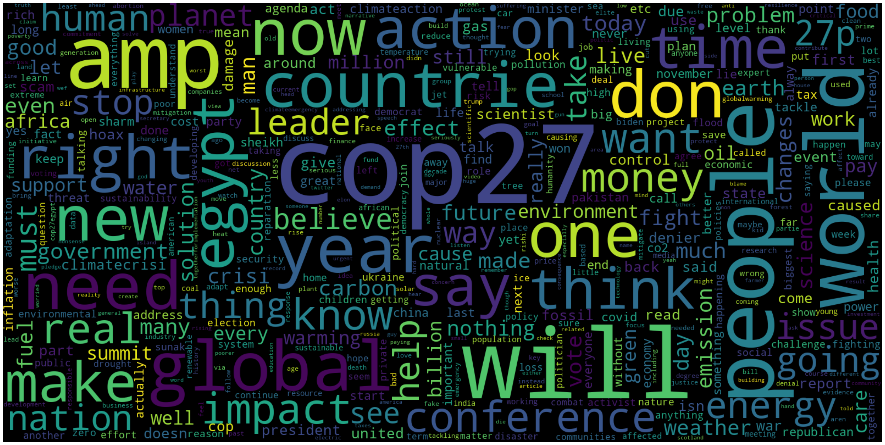
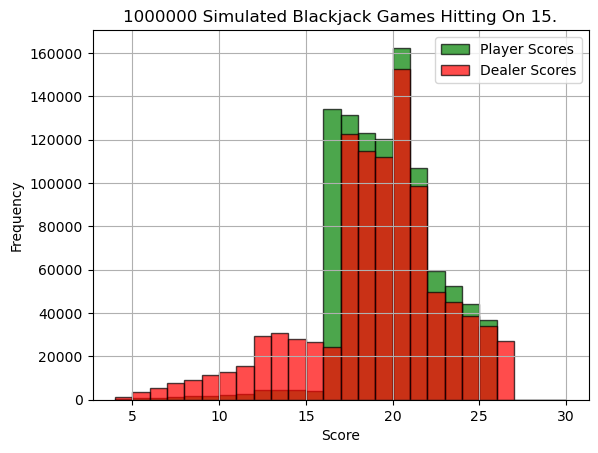

About Me
Currently pursuing my M.S. in Computer Science with a focus on Machine Learning at Georgia Institute of Technology, I combine strong technical expertise with practical industry experience from both Y Combinator startups and established tech companies.
My expertise spans machine learning, data engineering, and full-stack development, with a particular focus on NLP and predictive analytics. I bring a unique global perspective with proficiency in multiple languages and a background in both academic research and industry applications.
Featured Projects
Sentiment Analysis on Climate Change Tweets
A comprehensive sentiment analysis project analyzing 100,000 tweets about climate change using BERT. This project demonstrates advanced NLP techniques and deep learning applications in social media analysis.
View on GitHub →Monte Carlo Stock Market Simulation
A sophisticated Monte Carlo simulation tool for analyzing stock market scenarios and portfolio performance. This project implements advanced statistical methods to model potential market outcomes and risk assessment.
- Stock price prediction using geometric Brownian motion
- Multiple scenario analysis with varying market conditions
- Risk assessment and probability distribution analysis
- Interactive visualizations of simulation results
Water Potability Prediction

A machine learning project focused on predicting water potability using various water quality metrics. The project implements multiple classification models to determine if water is safe for consumption based on chemical and physical properties.
- Data preprocessing and feature engineering
- Implementation of multiple ML models for comparison
- Detailed analysis of water quality parameters
- Performance evaluation and model selection
Contact
I'm always interested in new opportunities and collaborations. Feel free to reach out!